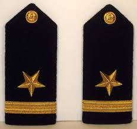

Interesting facts
- Linus Benedict Torvalds was born on December 28th 1969 in Helsinki. He comes from a family of journalists. His father Nils Torvalds is a Finnish politician and a likely candidate for president in future elections. He was named after Linus Pauling, a double Nobel prize winner in Chemistry and Peace.
- While you may find several people with the name Linus, you won’t find many people with the name Torvalds – because the ‘correct’ spelling is actually Torvald (without the s). His grandfather changed his name from Torvald to Torvalds, adding an ‘s’ at the end. And thus the Torvalds dynasty (if I can call it that) began. Since it’s such an unusual surname, there are hardly 30 Torvalds in the world and they’re all relatives, claims Linus Torvalds in his biography.
- Though he preferred to spend time on computers rather than in athletic activities, he had to attend compulsory military training. He held the rank of Second Lieutenant.In the British Army and in the United States Army, Air Force, and Marine Corps, a second lieutenant is the lowest ranking commissioned officer. Above him in those U.S. services comes a first lieutenant—lieutenant in the British Army—and then a captain.
- In 1993, when he was teaching at the University of Helsinki, he gave the task of composing email as homework to the students. Yeah, composing emails were a big deal back then. A female student named Tove Monni completed the task by sending him an email asking him out on a date. He accepted and three years later the first of their three daughters was born. Shall I say he started the internet dating trend? Hmm … nah! Let’s leave it there
- He has numerous awards to his name, including an asteroid named 9793 Torvalds.
- In 2000, Apple’s founder Steve Jobs invited him to work on Apple’s macOS. Linus refused the lucrative offer and continued to work on the Linux kernel.
- Linus Torvalds loves scuba diving. He even created Subsurface, a dive logging tool for scuba divers. You’ll be surprised that sometimes he even answers general questions on its forum.
- Linus doesn’t feel comfortable with public speaking. He doesn’t attend many events. And when he does, he prefers to sit down and be interviewed by the host. This is his favorite way of doing a public talk.
 Google Plus is the only social media platform he has used. He even spent some time reviewing gadgets there in his free time. Google Plus is now discontinued so he has no other social media accounts.Today, Linus only works on merging the code sent by Linux kernel contributors from across the globe and does not code that often.
Google Plus is the only social media platform he has used. He even spent some time reviewing gadgets there in his free time. Google Plus is now discontinued so he has no other social media accounts.Today, Linus only works on merging the code sent by Linux kernel contributors from across the globe and does not code that often.
 The concept of a Penguin came from Torvalds himself, but Larry Ewing first created Tux (Torvalds UniX) in 1996 after the suggestions from Linus Torvalds and Alan Cox. That’s right. Before jumping to conclusions, we have to keep in mind that most of the discussions from the time were as email listing. Even if it is not written, everyone had their own reasons to pick a penguin as the mascot. Let’s put back in context, in 1996 the Linux Kernel is under heavy development. The most famous leaders are Linus Torvalds (initiator of the project) and Alan Cox (considered to be the second head). And of course, the developers want a logo, something to face Windows (in full expansion at the time). A lot are talking about a shark, or something as strong as BSD Daemon. But Torvalds comes up and pushes the idea of a penguin, declaring that "Linus likes penguins". That's it. There was even a headline on it in some Linux Journal some time ago (I was bitten by a Killer Penguin in Australia - I'm not kidding). Penguins are fun.
The concept of a Penguin came from Torvalds himself, but Larry Ewing first created Tux (Torvalds UniX) in 1996 after the suggestions from Linus Torvalds and Alan Cox. That’s right. Before jumping to conclusions, we have to keep in mind that most of the discussions from the time were as email listing. Even if it is not written, everyone had their own reasons to pick a penguin as the mascot. Let’s put back in context, in 1996 the Linux Kernel is under heavy development. The most famous leaders are Linus Torvalds (initiator of the project) and Alan Cox (considered to be the second head). And of course, the developers want a logo, something to face Windows (in full expansion at the time). A lot are talking about a shark, or something as strong as BSD Daemon. But Torvalds comes up and pushes the idea of a penguin, declaring that "Linus likes penguins". That's it. There was even a headline on it in some Linux Journal some time ago (I was bitten by a Killer Penguin in Australia - I'm not kidding). Penguins are fun.